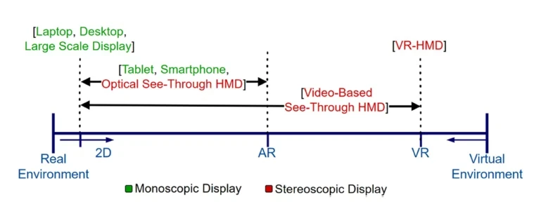

期刊论文IEEE Trans. Vis. Comput. Graph.
Grand Challenges in Cross Reality
Christoph Anthes, Mark Billinghurst, Uwe Grünefeld, Hans-Christian Jetter, Hai-Ning Liang, Frank Maurer, David Aigner, Craig Anslow, Guillaume Bataille, Abraham G. Campbell, Judith Friedl-Knirsch, Alexander Gall, Renan Guarese, Sebastian Hubenschmid, Yue Li, Fabian Pointecker, Andreas Riegler, Daniel Roth, Rishi Vanukuru, Nanjia Wang, Lingyun Yu, Johannes Zagermann, Daniel Zielasko